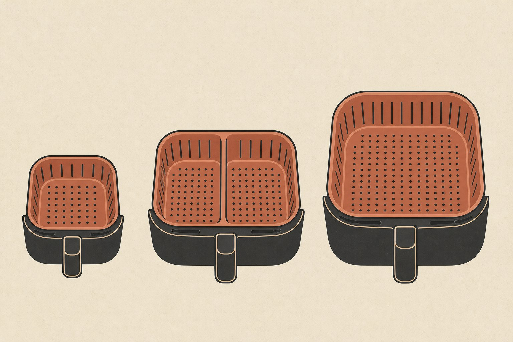

Sizes, decoded
6 QT, 8 QT and 26 QT are not the same kind of number
Quartage is the first thing printed on an air fryer listing and the least useful thing to compare. Here is the arithmetic the box skips, using three real listings.

Every air fryer argument starts with quarts and every one of them goes slightly wrong at the second step, because a quart rating is a volume, a volume is not a dinner, and the three listings on this site prove it.
So let's do the boring maths. Nothing below is estimated: the numbers are the ones printed in the listing titles Amazon served us on 2026-11-16 S67 S68 S69.
The three numbers, exactly as stated
| Listing | Total volume stated | How it is divided | Source |
|---|---|---|---|
| Chefman 6 Qt dual basket | 6 Quart | Two independent 3Qt baskets — 3 + 3 is 6, so the total and the halves agree S60 | S14 |
| Chefman TurboFry 8 Qt | 8 Qt | One XL basket, not divided S62 | S16 |
| Emeril Lagasse 26QT | 26QT | A single oven cavity, called an Extra Large Interior in the title S61 | S15 |
Divided volume is the one real difference
Six quarts in two drawers is a different object from eight quarts in one. The dual-basket listing says the baskets are independent, which is the only reason that layout exists: two foods, two settings, one finish time. The 8 Qt TurboFry has more room per basket but exactly one of them S14 S16.
So the question that actually decides it is not how big, it is how many things do you cook at once. Fries in one drawer and chicken wings in the other is a twin-basket argument. A whole tray of something, or a 26QT cavity that can hold a dish instead of a basket, is not.
And an oven-shaped cavity plays a different sport entirely: the Emeril listing sells accessories, not baskets — Six Cooking Accessories Included S15. Trays and racks spread food across levels, which is how you get around a smaller footprint. Volume alone cannot tell you that.
What quartage will never tell you
- Usable cooking surface. A basket that is 3Qt deep may still hold one layer of anything you want crispy. Nothing in the three titles states a surface area, a tray count for the twin-basket model, or a maximum food height.
- Whether it fits your counter. No external dimensions are printed in any of the three titles. Measure the space before you fall for a number, then check the listing.
- How many people it feeds. That is a portion claim, and none of these listings makes it here. Anything you read elsewhere that converts quarts to family size is a guess dressed up as a spec.
Two 3Qt drawers and one 8Qt drawer differ by two quarts and by everything that matters at 6pm.
A rule of thumb that survives contact with the spec sheet
If you cook one thing at a time, buy the biggest single cavity you have counter for. If you cook a starch and a protein together and you want them done at the same moment, buy divided volume even if the total number is smaller. If you want to roast, bake and toast as well as fry, buy the oven format and read the accessory list before you read the quartage.
That is a preference, not a performance claim — and this site will not pretend to have tested these three in your kitchen.